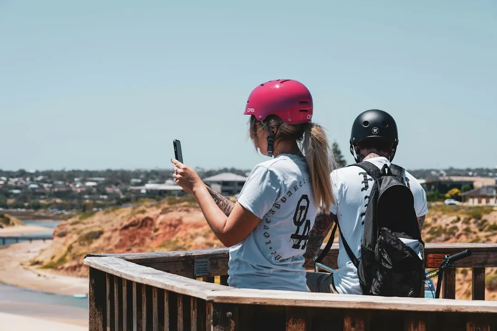

Older Adelaide homes with ceramic fuses, repeated tripping, damaged equipment or no safety switches may need a switchboard review. A replacement can install modern breakers and safety switches, but it will not automatically solve a fault in an appliance or old wiring. Plans for solar, batteries, an EV charger, ducted heating or induction cooking can affect capacity. Ask for the planned work, supply requirements, possible asbestos handling and price before the power is disconnected.
For homeowners comparing switchboard upgrades adelaide options, the practical decision is whether the fault is in the board, the wiring, an appliance, or the capacity needed for planned electrical work.
Switchboard Upgrades Adelaide Explained
The Switchboard Upgrades Adelaide guide recommends finding the reason for a tripping circuit before buying a new board. A repeated trip or blown fuse can come from an appliance, old wiring or the switchboard itself, so replacement alone may leave the underlying fault unresolved.
Look at the pattern and record what happens before requesting an assessment. Note which circuit is affected, whether the problem follows one appliance, and whether the board still uses ceramic fuse wire. Burning smells, buzzing or hot power points near the board need urgent attention. If there is smoke or sparks, call 000.
- Repeated breaker trips or blown fuses
- Ceramic fuses still fitted in the meter box
- No visible safety switches
- Damage, crowding or worn equipment at the board
What the electrician needs to inspect
An on-site inspection should consider the panel and the wiring behind it. Older homes, including stone villas, cottages and character properties around Kent Town, Wayville and North Adelaide, may have a board and wiring from the same era. The condition of both affects whether repair, partial work or a full replacement is appropriate.
Ask whether the proposed work includes circuit testing and labelling, individual circuit protection, safety switches, and checks for old wiring. If an asbestos backing panel may be present, its possible removal or handling should be included in the planning. Electrical installation work is not a home DIY task in South Australia, so the board replacement belongs with the electrician.
For a wider local comparison, the guide to choosing an Adelaide switchboard electrician can help frame the questions to ask before accepting a scope.
Capacity matters when the home is changing
A modern board needs to suit the way the home uses electricity now and what is planned next. Solar, a battery, an EV charger, ducted heating and induction cooking can change the required circuits or available capacity. A board may have spare physical positions while the supply still cannot support another large appliance.
Tell the electrician about planned additions before the quote is prepared. Ask whether the work needs extra capacity, three-phase power or a mains upgrade, and whether the proposed board leaves room for future circuits. These questions are more useful than choosing a board by appearance alone.
- List appliances or energy equipment planned for the property.
- Ask which circuits will be added, altered or tested.
- Confirm whether the supply can support the intended load.
- Request the future capacity assumptions in writing.
Compare the scope before comparing prices
A clear quote should identify the agreed work before the supply is disconnected. A full replacement may involve removing an old, crowded or worn board and fitting breakers and safety switches. A ceramic fuse-box upgrade may also include circuit testing and labelling. Safety-switch installation can be a narrower job where the existing board remains suitable.
Price can change when old wiring, concealed problems, possible asbestos, changes to the mains supply or additional circuits are found. Ask what is included, what would require approval before extra work, and whether a Certificate of Compliance will be provided when the job is finished.
| Situation | Likely discussion | Question to ask |
|---|---|---|
| Ceramic fuse board | Modern breakers, safety switches and circuit checks | Will the old wiring be assessed too? |
| Planned new appliance | Capacity, spare space and possible supply changes | Can the existing supply support it? |
| Repeated tripping | Fault finding before replacement | Is the cause the board, wiring or appliance? |
Who this guide applies to
This guide is for owners and occupiers of Adelaide homes who are dealing with an older fuse board, recurring trips, planned electrical additions or uncertainty about an upgrade quote. It is particularly relevant where the property has ceramic fuses, limited board space, old wiring or a possible asbestos backing panel.
It is not a substitute for an inspection. The appropriate outcome may be a repair, safety-switch installation, partial upgrade or full replacement, depending on the board, wiring, supply and intended electrical load. Before work starts, confirm the scope, isolation arrangements, price, treatment of concealed issues and compliance paperwork.
- Describe the symptom. Record which circuit trips, whether a fuse blows, and what appliance or activity was running.
- List planned additions. Tell the electrician about solar, a battery, an EV charger, ducted heating or induction cooking.
- Request a site assessment. Ask for the board, wiring, supply, available space and possible asbestos backing to be considered together.
- Check the written scope. Confirm the agreed work, price, possible extra work and compliance document before isolation begins.
| Situation | Likely discussion | Question to ask |
|---|---|---|
| Ceramic fuse board | Modern breakers, safety switches and circuit checks | Will the old wiring be assessed too? |
| Planned new appliance | Capacity, spare space and possible supply changes | Can the existing supply support it? |
| Repeated tripping | Fault finding before replacement | Is the cause the board, wiring or appliance? |
Common questions
Will the power go off during a board replacement? Yes. The supply must be isolated while the old board is exchanged, so lights and appliances stop for a period. The duration depends on the board and the wiring behind it.
Does a new board fix every tripping circuit? No. Tripping can come from the board, old wiring or an appliance. The cause should be investigated before replacement is selected.
What is normally added to a modern board? A replacement can include individual circuit breakers and safety switches. The exact scope depends on the existing board, wiring and supply.
Can planned appliances change the upgrade? Yes. Solar, batteries, EV chargers, ducted heating and induction cooking can affect circuits and capacity. Tell the electrician about them before quoting.
What if the board has asbestos backing? Possible asbestos should be identified during planning so its handling or removal is included in the work scope.
Will there be compliance paperwork? The published guide states that the electrician provides a Certificate of Compliance once the upgrade is finished.
This guide covers warning signs, inspection questions, capacity planning and quote checks for older Adelaide switchboards.